SQL注入攻击
简介
SQL注入攻击是黑客对数据库进行攻击的常用手段之一，不论是在WEB领域还是其它领域。攻击发生的原因依然是信任问题，开发人员信任用户输入，未对用户输入进行合法性检查，使应用程序存在安全隐患。譬如最常见的搜索功能，用户输入一段信息至后台进行数据库查询，当用户输入的信息中含有SQL语句时而后台未做安全检查时，该语句可能会被直接执行，这就是SQL Injection。
SQL注入攻击是从正常的WWW端口访问，而且表面看起来与一般的Web页面访问没什么区别，所以市面的防火墙都不会对SQL注入发出警报，如果管理员没查看日志的习惯，可能被入侵很长时间都不会发觉。但是，SQL注入的手法相当灵活，在注入的时候会碰到很多意外的情况，需要构造巧妙的SQL语句，从而成功获取想要的数据或者操作。
注入攻击的本质，是把用户输入的数据当做代码执行。这里有两个关键条件，第一个是用户能够控制输入；第二个是原本程序要执行的代码，拼接了用户输入的数据。
从根本上来说，解决SQL注入攻击的方法依然是不要信任用户的任何数据输入。
攻击例子
下面一个通过id搜索学生数据页面:
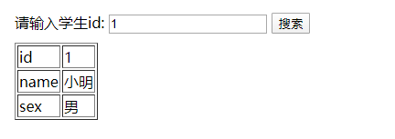
该数据库中所拥有的数据:
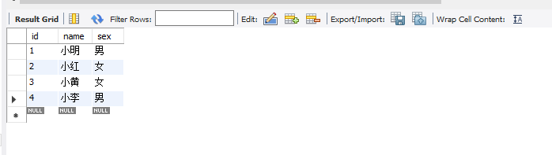
当点击搜索按钮时，页面往服务器发送请求，服务器根据id字段进行搜索并返回结果：
请求: http://localhost:3000/getStudentById?id=1
结果: [{"id":1,"name":"小明","sex":"男"}]
从上述的请求中可以攻击者猜测：服务器根据id进行数据库的查询操作，极有可能表明查询的表中含有id字段。随后攻击者猜测表名，在输入框中插入了一条删除数据的SQL：
1;delete from Student where id = 2
执行结果：
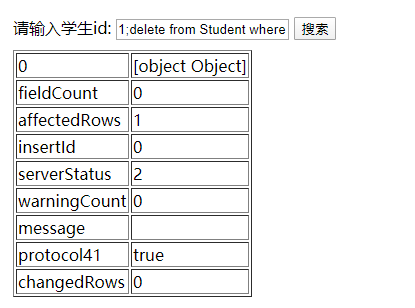
此时查看数据库：
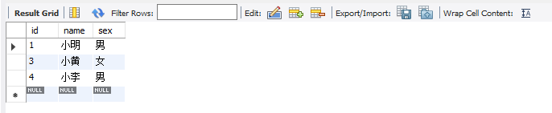
可以发现id=2的学生信息已经被删除。
查看后台的编写代码：
const express = require('express');
const mysql = require('mysql');
const app = express();
//创建 connection
const connection = mysql.createConnection({
host: 'localhost',
user: 'root',
password: '********',
database: 'test',//数据库名
port: 3306, //端口号
multipleStatements: true // 允许执行多条执行语句
});
// 跨域设置
app.all('*', function (req, res, next) {
//设置允许跨域的域名，代表允许任意域名跨域
res.header('Access-Control-Allow-Origin', '*');
//允许的header类型
res.header('Access-Control-Allow-Headers', 'content-type');
//跨域允许的请求方式
res.header('Access-Control-Allow-Methods', 'DELETE,PUT,POST,GET,OPTIONS');
if (req.method.toLowerCase() == 'options')
res.send(200); //让options尝试请求快速结束
else
next();
});
app.get('/getStudentById', function (req, res) {
var sql = 'select * from student where id = ' + req.query.id
console.log(sql);
// 获取所有的数据
connection.query(sql, function (err, rows, fields) {
if (err) {
// throw err
res.send(err); // 如果开启了错误回显
console.log(err);
}
res.send(rows);
})
})
app.listen(3000, function () {
console.log('服务已启动');
})
其中关键语句:
var sql = 'select * from student where id = ' + req.query.id
SQL语句是通过用户输入与现有字符拼接而成的，如果用户输入类似1;delete from Student where id = 2的查询字符，则会被拼接成
'select * from student where id = 1;delete from Student where id = 2'
然后被query()方法执行。
虽然攻击者无从得知表名，在构造SQL时稍有困难，但是搜索并不会因为执行错误而禁止再次执行，所以攻击者可以无限猜测，风险仍然是存在的。另外，在上述的后台程序中，当query()执行错误时，会把错误信息返回至请求结果中，攻击者则可以通过故意触发查询错误而获取敏感信息，假如搜索框中输入单引号'并执行搜索，则返回如下信息：
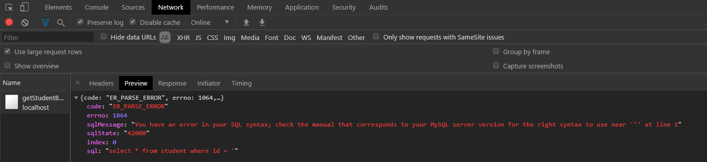
其中sql字段直接暴露了表名，也直接表明了该接口存在漏洞，会执行外部输入的SQL语句（正常的请求下应该根据id='进行搜索并返回空的数组）。
盲注攻击
很多时候，服务器并不会直接把错误返回给web，这样就避免了敏感信息的暴露并且使攻击者难以判断注入的SQL是否被执行。但是关闭了错误回显就能避免SQL攻击了吗？答案使否定的。
这里依然使用上述攻击例子的web网站来进行测试，我们在搜索框中输入1 and 1=2并且执行搜索:
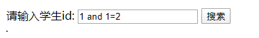
请求结果:
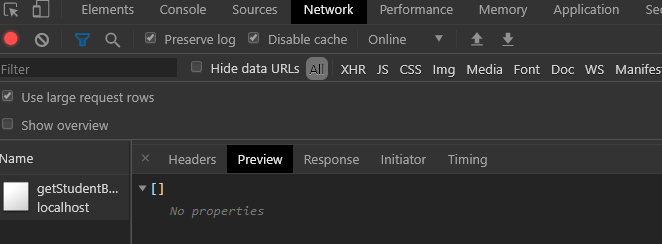
可以看到搜索结果返回了一个空数组，这是正常的。然后继续在搜索框中输入1 and 1=1并且执行搜索:
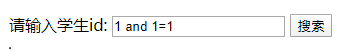
请求结果:
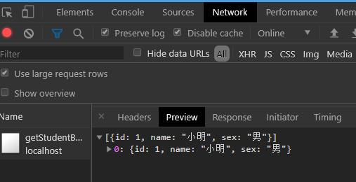
这次却不正常地返回了数据，由此可以猜测，第一次搜索1 and 1=2时，由于1=2永远不成立，导致SQL执行and的运算时错误，而搜索1 and 1=1时，1=1恒成立，SQL正常执行，返回了搜索数据，所以可以判定此接口漏洞存在，能够注入SQL并执行。
除了上述通过页面请求结果差异化来判断是否存在SQL注入漏洞，还可以利用SQL执行时间的差异化进行判断，这类型的盲注攻击也称为Timing Attack。
在Mysql数据库中，有一个BENCHMARK()函数，它是用于测试函数性能的。它有两个参数：
BENCHMARK(count, expr)
函数实现的是将expr表达式执行count次。借此，我们利用该函数构造如下表达式：
select * from student where id = 1; select BENCHMARK(100000, ENCODE('timing', 'attack'))
即需要在输入框中输入1; select BENCHMARK(100000, ENCODE('timing', 'attack'))并执行:
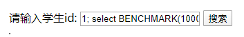
执行结果：
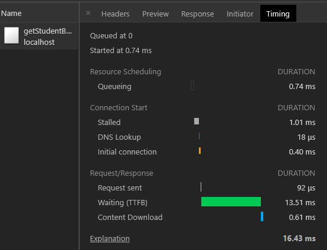
可见，请求在16.43ms后执行完成。接着修改BENCHMARK()的执行次数为10000000次:
select * from student where id = 1; select BENCHMARK(10000000, ENCODE('timing', 'attack'))
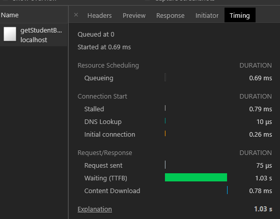
同样搜索目标为id=1的信息，请求返回的时间却相差巨大，由此也可以判断出该接口存在SQL注入漏洞。
防御手段
理论上来说，只要存在SQL注入漏洞，就有可能被成功攻击，反过来说就是，只要消灭SQL注入漏洞，被成功攻击的可能性就更低。所以我们SQL注入防御工程需要做一下两件事:
- 找到所有的SQL注入漏洞;
- 修补这些漏洞。
做好以上两件事，就能有效防御SQL注入攻击。做好防御工程并不是一件容易的事情，下面介绍有哪些常用的防御手段。
使用预编译语句
预编译语句的工作原理：
预处理：创建 SQL 语句模板并发送到数据库。预留的值使用参数 “?” 标记 。例如：
INSERT INTO myCity (Name, CountryCode, District) VALUES (?, ?, ?)数据库解析，编译，对SQL语句模板执行查询优化，并存储结果不输出。
执行：最后，将应用绑定的值传递给参数（”?” 标记），数据库执行语句。
例如在PHP中这样使用：
$query = "INSERT INTO myCity (Name, CountryCode, District) VALUES (?, ?, ?)"; // 定义预编译语句, 预留？？？分别对应Name, CountryCode, District变量 $stmt = $mysqli->prepare($query); // mysql解析 $stmt->bind_param("sss", $val1, $val2, $val3); $val1 = 'Stuttgart'; // 赋值 $val2 = 'DEU'; $val3 = 'Baden-Wuerttemberg'; $stmt->execute(); // 执行语句使用预编译的SQL语句，SQL语句的语义不会发生改变。在SQL语句中，变量用？表示，攻击者无法改变SQL的结构，在上面的例子中，即使攻击者插入类似于tom’ or ‘1’=’1的字符串，也只会将此字符串当做username来查询。
使用存储过程
使用存储过程的效果和使用预编语句译类似，其区别就是存储过程需要先将SQL语句定义在数据库中。但需要注意的是，存储过程中也可能会存在注入问题，因此应该尽量避免在存储过程内使用动态的SQL语句。如果无法避免，则应该使用严格的输入过滤或者是编码函数来处理用户的输入数据。
检查数据类型
检查用户输入，严格控制数据格式在某种程度上来说，也可以有限防御SQL攻击。
例如在文章最开始的攻击举例中，id字段应该是一个integer类型的数据，所以只需在接收参数的处理函数稍加处理:
app.get('/getStudentById', function (req, res) {
if(typeof req.query.id !== 'number') {
res.send({
status: Status.Error,
message: '请输入正确的数据格式！',
data: null
});
return
}
var sql = `select * from student where id = ${req.query.id}`;
// 获取所有的数据
connection.query(sql, function (err, rows, fields) {
/*... code ...*/
})
})
经过格式检查的处理后，该接口的SQL漏洞直接消失殆尽，因为单纯的integer数据无法构造出SQL语句。不过总有需要用户输入字符串作为数据的时候，这时限制数据类型为字符串并不能有效消灭SQL漏洞，这时就需要使用安全编码函数。
使用安全函数
使用安全编码函数对用户输入数据按照黑名单原则进行敏感字符进行转义编码，也能有效地减少SQL注入攻击，一般数据库厂商都会给出黑名单指导意见。例如在Mysql中，厂商建议按照一下思路进行编码字符:
NUL (0x00) --> \0
BS (0x08) --> \b
TAB (0x09) --> \t
LF (0x0a) --> \n
CR (0x0d) --> \r
SUB (0x1a) --> \z
" (0x22) --> \"
% (0x25) --> \%
' (0x27) --> \'
\ (0x5c) --> \\
_ (0x5f) --> \_
最小权限原则
在最后，从数据库自身的角度来说，应该使用最小权限原则，避免Web应用直接使用root、dbowner等高权限账户直接连接数据库。如果有多个不同的应用在使用同一个数据库，则也应该为每个应用分配不同的账户。Web应用使用的数据库账户，不应该有创建自定义函数、操作本地文件的权限。
总结
安全问题就是信任问题，注入攻击是过于信任用户输入的结果，也违背了“数据与代码分离原则”。它有两个条件：一是用户能够控制数据的输入；二是代码拼凑了用户输入的数据，把数据当做代码执行了。在编写代码时，保持“一切不可信任”的思想，在用户交互需要输入数据的地方加强安全检查，尤其是当用户数据需要拼接代码时，如此以往就能有效减少注入漏洞。